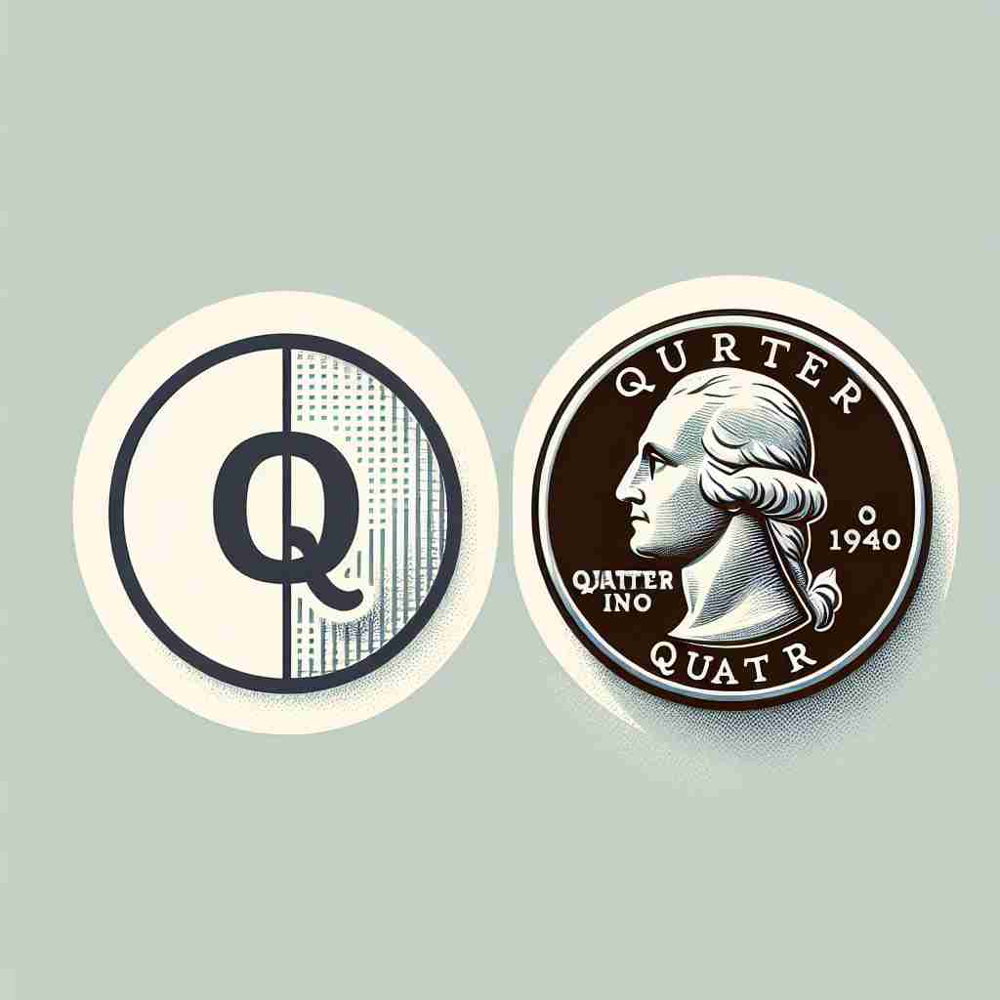

💬 I found a quarter coin in my pocket. 我在口袋里发现了一枚25美分硬币。

💬 She ate a quarter of the pie for dessert. 她吃了四分之一的派作为甜点。

💬 She took a quarter of the pie for dessert. 她拿了一块四分之一的派作为甜点。
💬 I found a quarter coin in my pocket. 我在口袋里发现了一枚25美分硬币。
💬 She ate a quarter of the pie for dessert. 她吃了四分之一的派作为甜点。
💬 She took a quarter of the pie for dessert. 她拿了一块四分之一的派作为甜点。
🧠 通过理解'quarter'的核心含义是'四分之一'，你可以轻松联想到其他用法。无论是时间（15分钟、3个月）、金钱（25美分）、方向（指南针的四个方向之一）还是区域（城市的一个区域），都是从'四分之一'这个概念衍生而来。记住这个核心含义，其他用法就会变得更容易理解和记忆。
🔈 ['kwɔːtə]
🗝️ n. one of four equal parts of something 某物的四分之一部分之一
🎭 在一个披萨聚会上，主持人拿起一整块披萨，用刀均匀切成四块。在场的朋友们每人取了一块，这完美地体现了'quarter'作为四等份之一的含义。
💬 She cut the pie into quarters. 她把饼切成了四块。
🌳 由词根 'quart'（意为四）加上名词后缀 '-er' 组成。'quarter' 表示四等分之一或四分之一。
💡 记忆 'quarter' 时，可以联想到 '四' 的概念，例如 '四分之一' 的一块饼，或者 '四季' 中的一个季节。通过联想 '四' 的不同表达场景，有助于记忆它的含义。
🗝️ n. a period of 15 minutes 15分钟
🎭 在一个繁忙的城市公交车站，一位乘客抬头看了看钟表，心想：离公交车到站还有'un quarter'的时间，她决定利用这15分钟看一本小书。
💬 The meeting will start in a quarter of an hour. 会议将在十五分钟后开始。
🤔 一小时的四分之一
🗝️ n. a three-month period of a year 一年的三个月期间
🎭 在一间公司会议室里，财务主管正在向团队展示季度报告。他总结了过去三个‘quarters’的财务表现，强调了每个季度的增长和挑战。
💬 The company's profits increased in the first quarter. 公司的利润在第一季度上升。
🤔 一年的四分之一
🗝️ n. a coin worth 25 cents in the US and Canada 在美国和加拿大价值25美分的硬币
🎭 在美国的一家便利店，一个孩子把手里的'quarter'放到柜台上，兴奋地指着他想购买的一颗糖。这个场景生动展示了25美分硬币作为交易货币的角色。
💬 He inserted a quarter into the vending machine. 他把一个四分之一美元硬币放进自动售货机里。
🤔 一美元的四分之一
🗝️ n. one of the four main points of a compass 罗盘的四个主要方向之一
🎭 在一个航海课程中，教练正在解释罗盘上的四个主要点。她用手指向北方，讲解它作为一个‘quarter’如何帮助导航。
💬 The wind is coming from the eastern quarter. 风来自东南方向。
🤔 指南针四个主要方向之一
🗝️ n. a district of a town 城镇的一个区
🎭 在巴黎的一个著名艺术'quarter'中，游客们徜徉于画廊和小巷，沉浸在创意和文化氛围中。这个场景展现了城市中以文化或历史闻名的某一区域。
💬 They live in the old quarter of the city. 他们住在城市的老城区。
🤔 城镇的一个区域，源于将城市划分为四个部分的概念
🗝️ v. to provide accommodation for 提供住宿给
🎭 在一个古老的城堡内，管家正在忙碌地为即将到来的宾客‘quarter’准备房间。这包含了为客人提供住宿和周到服务的过程。
💬 The soldiers were quartered in the old barracks. 士兵们被安置在旧兵营里。
🤔 源于军队将士兵分配到四个区域的做法